Leütenhaven sykkelhotell
19Parkeringshusnedkjørsel transformert til sykkelparkering
Offentlig · Ombruk · transformasjonSe bildegalleri
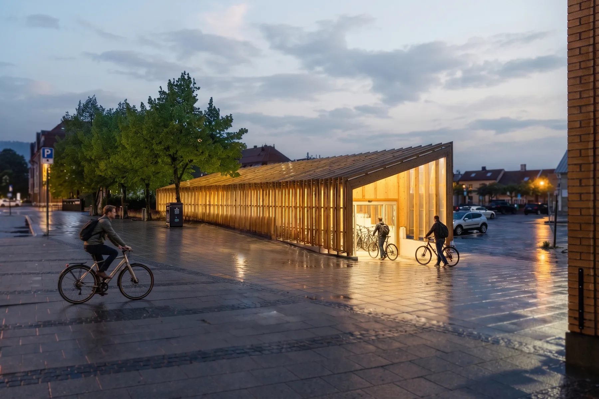
- Byggherre
- Trondheim Eiendom / Miljøpakken
- Byggeår
- 2022
- Medarbeidere
- Thov Sanden, Iver Berg Blomsøy
Om prosjektet
En tidligere bilrampe er blitt sykkelhotell med plass til 146 sykler. Gjenbrukte trerammer bærer en gjennomskinnelig overbygning som slipper inn dagslys og lyser opp byrommet om kvelden.
Bilder & tegninger11 bilder


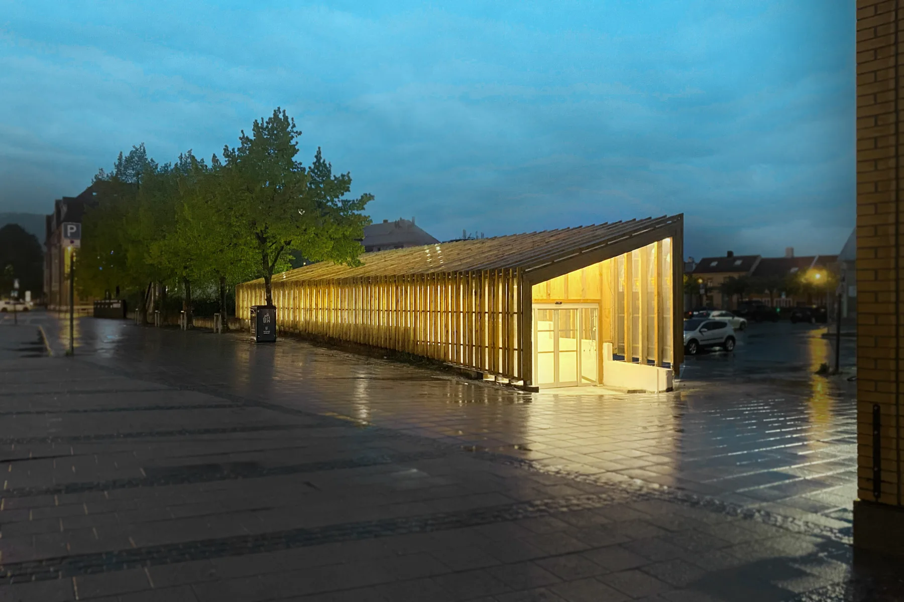
Forstørr
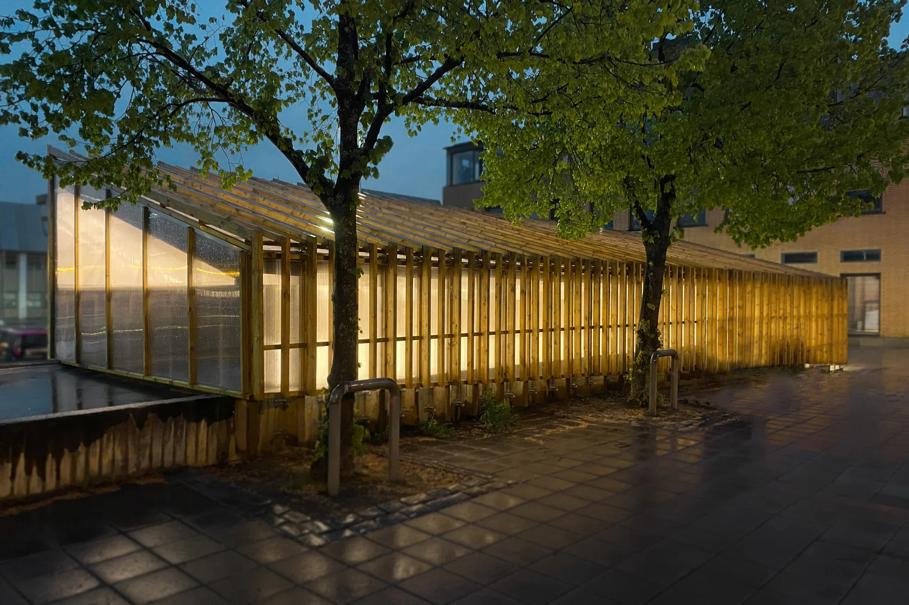
Forstørr
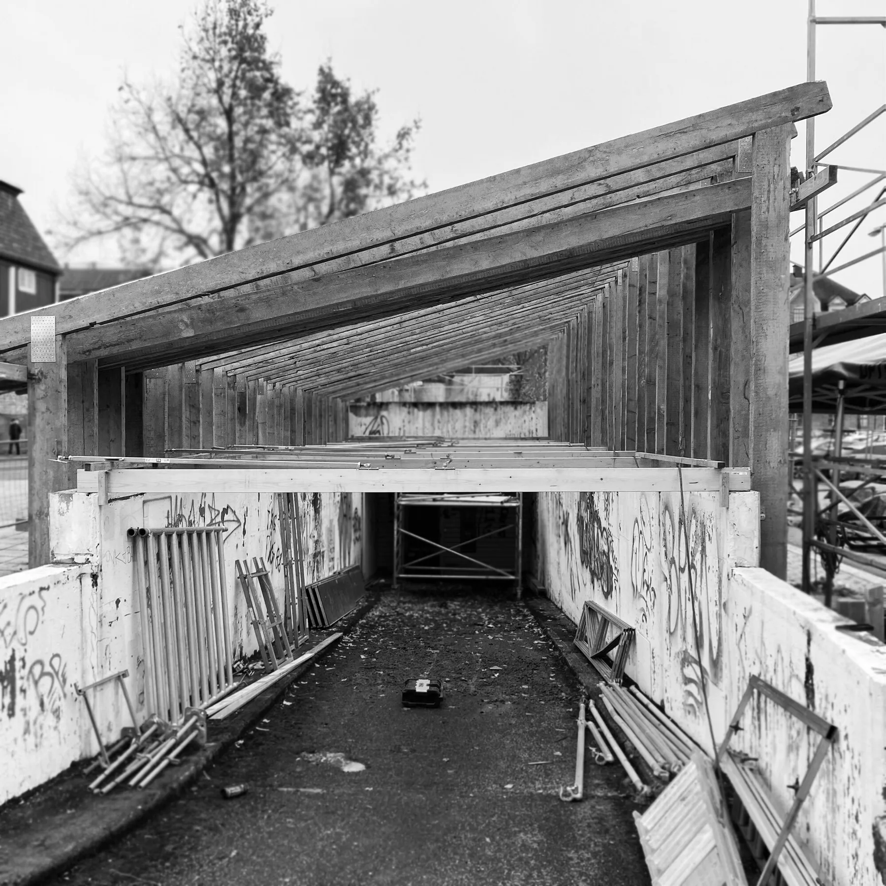
Forstørr
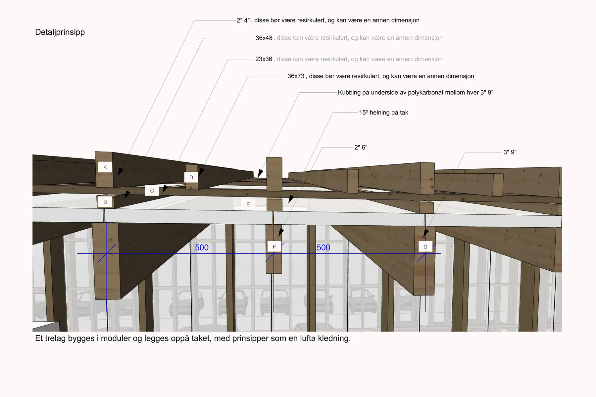
Forstørr
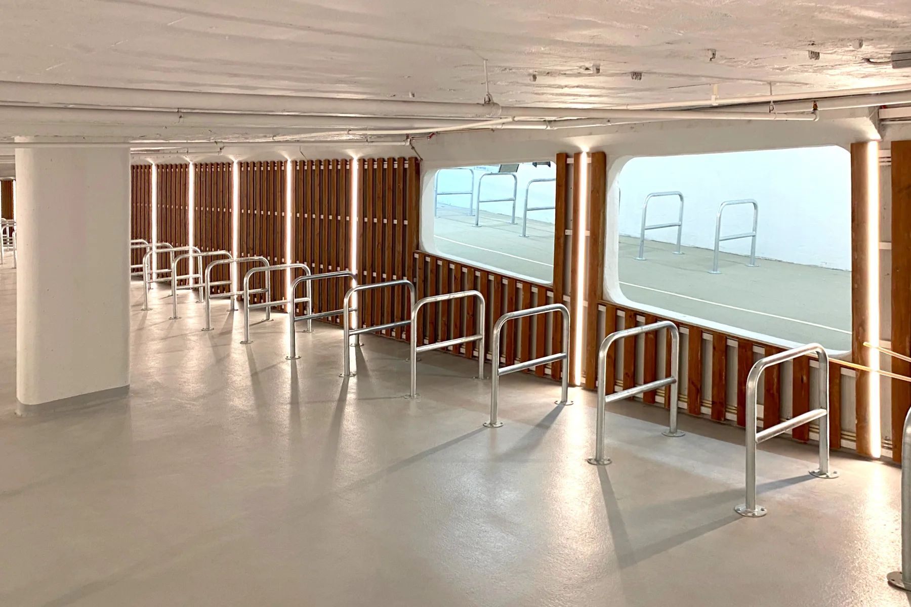
Forstørr
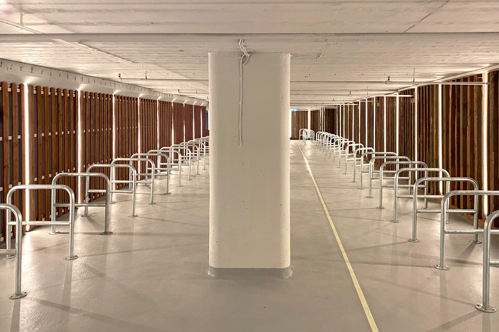
Forstørr
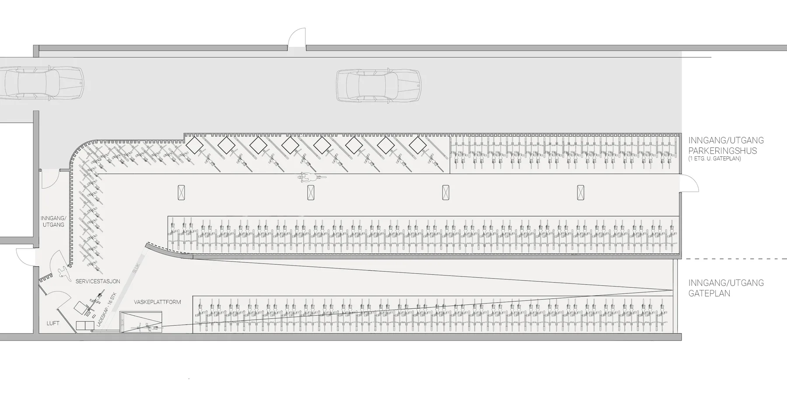
Forstørr
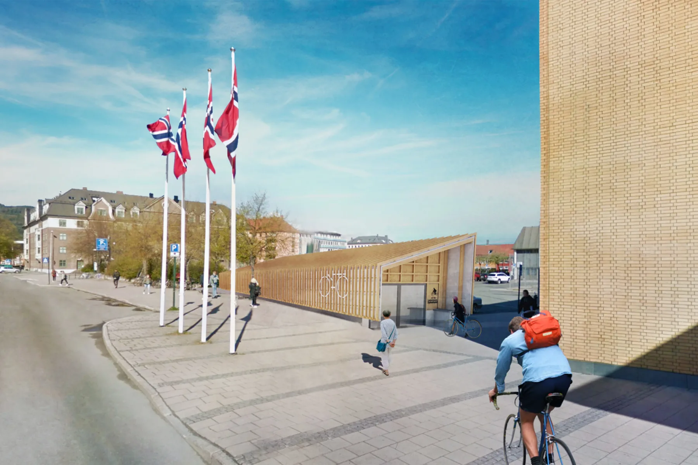
Forstørr
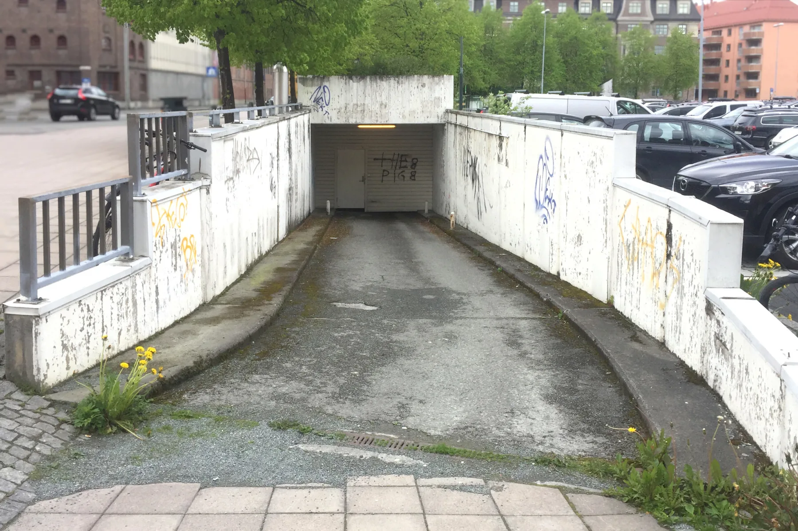
Forstørr
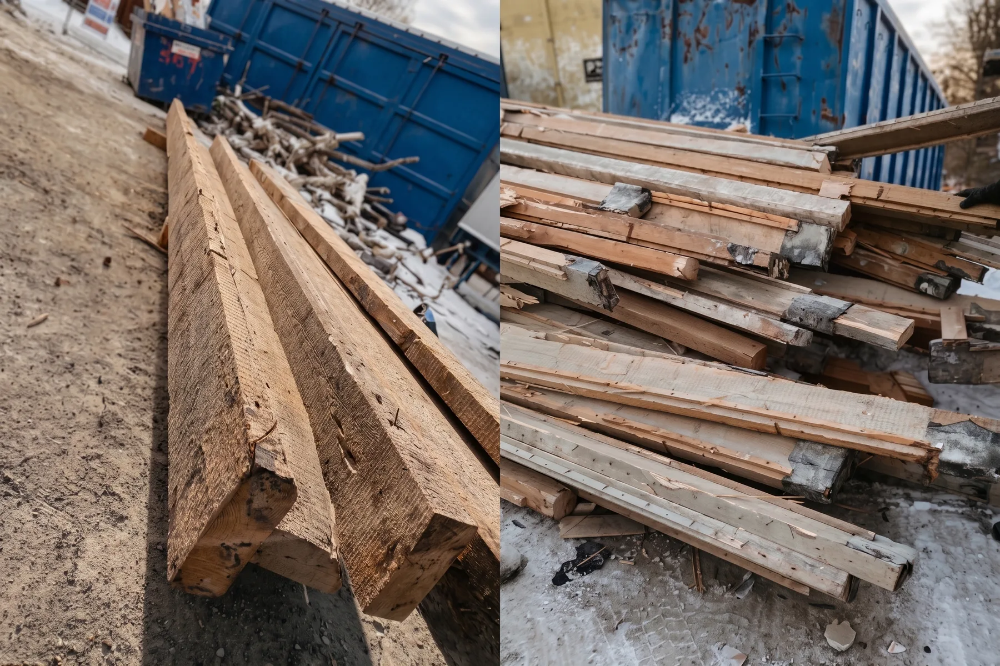
ForstørrInnsiden av sykkelparkeringen. Foto og tegninger (om ikke annet er nevnt): Bergersen Arkitekter AS.
La oss begynne med en samtale